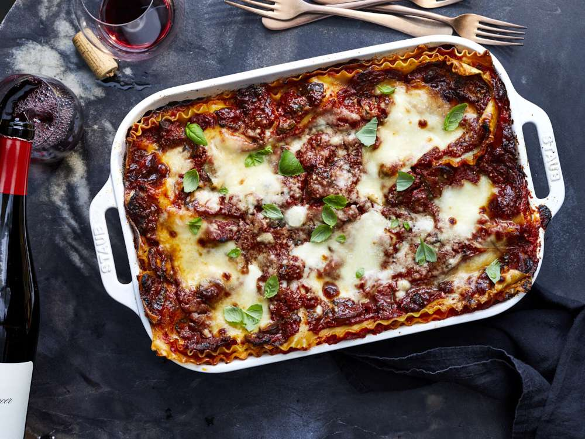

Beef Lasagne

Description
A quick and easy beef lasagne that's extra cheesy and ready to eat in just
1 hour! And best of all, a time saver, as there's absolutely no need to
make a bechamel sauce! The perfect midweek family dinner.
Ingredients
- 1 tbs olive oil
- 1 onion
- 1 clove garlic, crushed
- 500g beef mince
- 65g tomato paste
- 800g canned tomatoes
- 2 cups beef stock
- 2 tsp dried italian parsley
- salt and pepper, to taste
- 250g mozzarella cheese
- 50g parmesan cheese
- 375g lasagne sheets
Instructions
-
Heat the olive oil in a saucepan or deep frying pan. Add the diced onion
and minced garlic and cook until soft and translucent.
-
Add the beef mince, breaking the clumps apart with a spoon, and cook
until browned.
-
Stir through the tomato paste, canned tomatoes, beef stock and herbs.
Season with salt and pepper.
-
Bring to the boil and then cover and simmer for 15-20 minutes, stirring
occasionally.
- Preheat the oven to 180 degrees celsius (fan-forced).
- Lightly grease a large baking dish.
-
Spoon ½ cup of the bolognese sauce into the bottom of the prepared dish.
-
Layer with the fresh lasagne sheets and ¼ of the shredded mozzarella
cheese.
-
Repeat with the meat, lasagne sheets and mozzarella until you have 4
layers, finishing with a mozzarella layer.
- Sprinkle over the grated parmesan cheese.
- Bake in the oven for 30-40 minutes or until cooked through.
- Leave to stand for 5 minutes before serving.